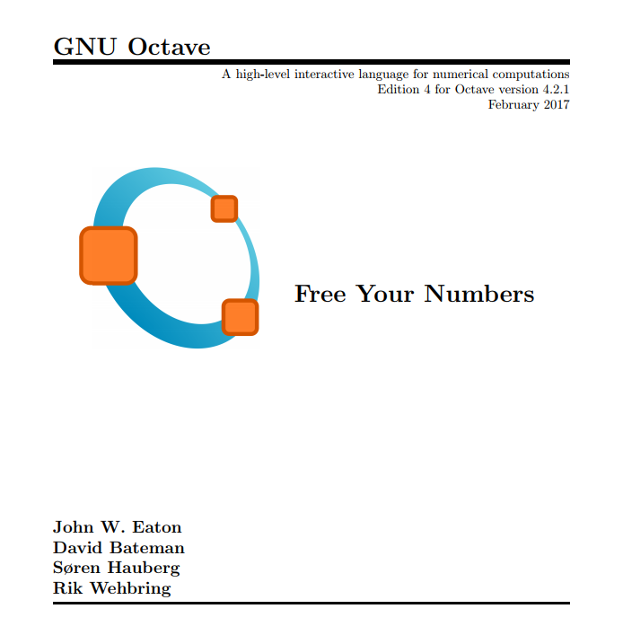
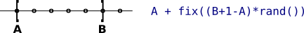

Programación para Ingeniería y Ciencias con MATLAB y Octave
Coordinador:
Santiago Higuera de Frutos
Doctor Ingeniero de Caminos
Santiago Higuera

- Santiago Higuera
- @santiagohiguera
- Profesor en @caminosupm
- Participo en:
- Publico en:
- eMail: santiago.higuera@upm.es
Contenidos del curso
- Introducción: Instalación del software. Operadores aritméticos, relacionales y lógicos. Funciones de biblioteca. Comandos utilitarios
- Programación básica: scripts, asignaciones, bifurcaciones y bucles. Entrada de datos por teclado y salida de resultados por pantalla
- Operaciones con vectores y matrices
- Programación estructurada. Desarrollo de funciones
- Gráficos 2D y 3D
- Gráficos 2D y 3D
Descarga de software
-
MATLAB
Licencia con el correo UPM
https://es.mathworks.com/downloads/web_downloads Instalar_MATLABCampus_Estudiantes_UPM.pdf -
Octave
Software libre, no necesita licencia
http://octave.org
Bibliografía recomendada
Programación para Ingeniería y Ciencias con MATLAB y Octave
Sagrario Lantarón Sánchez. Biblioteca Técnica Universitaria
Referencia de Octave
"Free your numbers"
Varios autores. Descarga libre pdf

Documentación en línea
Resúmenes en pdf
-
Bestiario - Autor: Juan Viu
https://github.com/shiguera/mastermusic/raw/master/MatlabOctave_bestiario.pdf -
Integración numérica
https://github.com/shiguera/mastermusic/raw/master/integracion_numerica.pdf Código de los ejemplos -
Gráficos de superficies
https://github.com/shiguera/mastermusic/raw/master/ResumenSuperficies.pdf -
Seminario Ficheros
https://github.com/shiguera/mastermusic/raw/master/SeminarioFicheros.pdf
Canal Youtube y Blog Matemata
-
Canal Youtube Informática Caminos
https://www.youtube.com/channel/UCbH_4jBvy7TsR_ChB7IbvOQ/videos -
Blog Matemata
https://blogs.upm.es/matemata/
Instalación del software necesario, entorno de desarrollo y primeros pasos
Uso del software como calculadora
Tipos de datos elementales, operadores y comandos utilitarios
Introducción al manejo de MATLAB Y Octave
Iniciación a la programación
Iniciación a la programación I
Iniciación a la programación II
Resolución de sistemas lineales
Estructuras de control de tipo condicional
Funciones de biblioteca I (parte 1)
Error en el minuto 9: La fórmula correcta para calcular núeros enteros aleatorios es:
Funciones de biblioteca I (parte 2)
Funciones de biblioteca II
Estructura repetitiva "for"
Estructura repetitiva "while"
Interrupciones de bucles y programas
Gráficos bidimensionales
Gráficos de superficies
Manejo de múltiples gráficos y comandos auxiliares
Visualización de campos vectoriales y curvas de nivel
Programación modular
Funciones definidas por el programador
Ficheros de datos I
Ficheros de datos II
Integración numérica
Sistemas de ecuaciones lineales. Métodos iterativos
Ecuaciones no lineales
FIN
santiago.higuera@upm.es
Esta obra está bajo una Licencia
Creative Commons Atribución-NoComercial-CompartirIgual
3.0 Unported